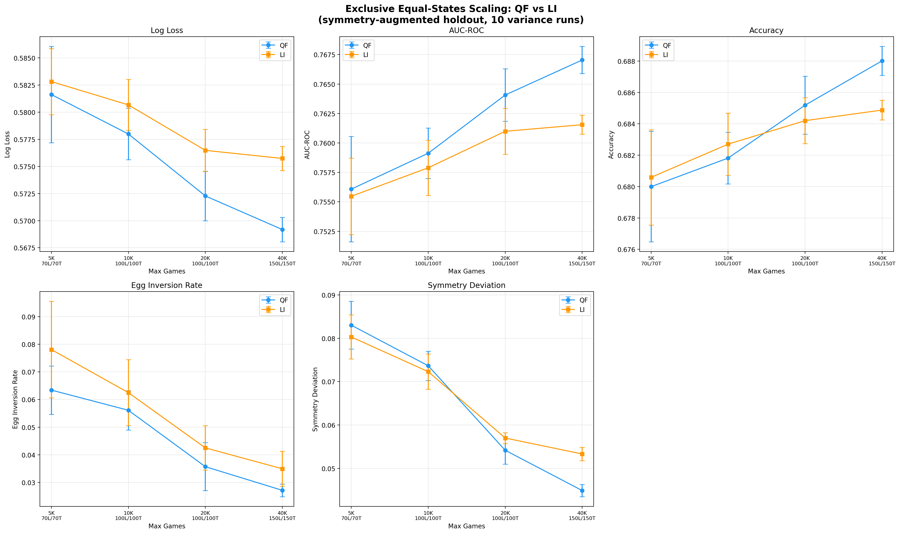
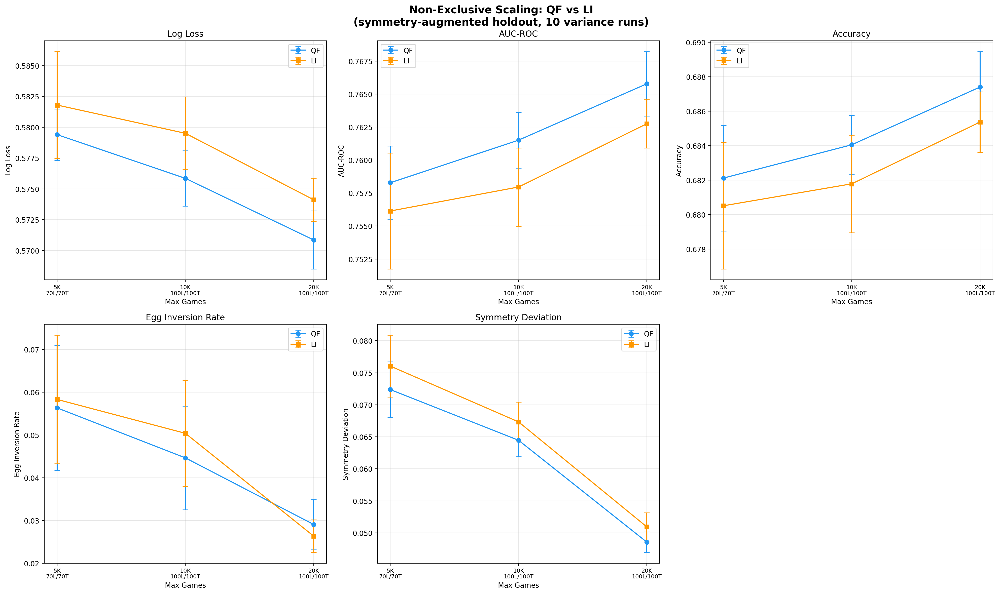
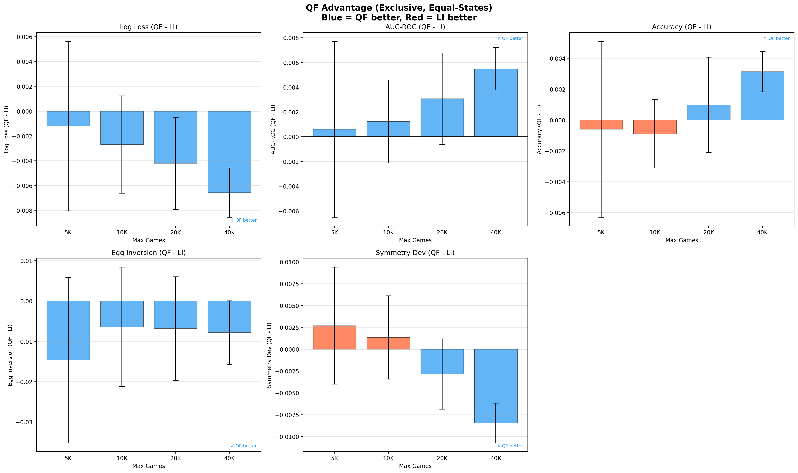
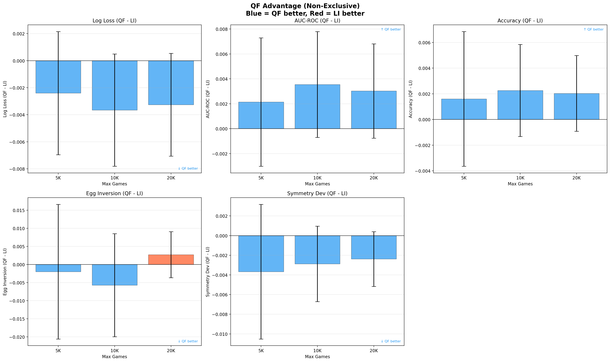

Data Quality Filtering Report
Does training on quality-filtered games produce a better win-probability model than training on the larger but noisier logged-in-games dataset?
Quality Classifier
Games are filtered by a LightGBM binary classifier trained to distinguish competitive games from junk/practice/button-check games using 69 hand-crafted event-stream features. The classifier achieves AUC ~0.908, with a threshold calibrated so 99% of tournament games pass.
Full details: quality_classifier_report.md
Datasets
| Dataset | Description | Size |
|---|---|---|
| quality_filtered (QF) | Unfiltered games passing the quality classifier threshold (score >= 0.3643). Sorted by quality score descending. | ~182K games |
| logged_in_games (LI) | Games with at least one logged-in player, sorted by login count. | ~183K games |
| late_tournament_games | Tournament games held out for evaluation. | ~693 games (~1.4K after symmetry augmentation) |
QF and LI are similar in size but differ in composition. They share ~108K games; each has ~75K exclusive games the other lacks. The exclusive subsets isolate the signal from quality filtering vs. login-based selection.
Experiment Design
Win-Probability Model
LightGBM binary classifier predicting P(gold wins) from in-game state features (69 features: berry counts, snail position, kills, carries, etc.). Each game event updates the state, yielding ~100-300 training examples per game — so training set sizes are orders of magnitude larger than game counts.
Evaluation Metrics
- Log loss: Primary metric. Lower is better.
- AUC-ROC: Discrimination ability. Higher is better.
- Accuracy: Classification accuracy at 0.5 threshold. Higher is better.
- Egg inversion rate: Fraction of sampled positions where adding a blue egg causes P(blue wins) to decrease. Measures non-monotonicity — a perfectly monotonic model would score 0. Lower is better. Computed on 5,000 samples.
- Symmetry deviation: Mean |P(gold wins | features) - (1 - P(gold wins | swapped features))|. Measures consistency under team swap. Lower is better.
Holdout Set
693 late tournament games, doubled to ~1.4K via symmetry augmentation (blue/gold team swap), producing ~250K evaluation states. Excluded from all training sets.
Experiment Modes
Exclusive (equal-states): Trains only on games unique to each dataset (QF-exclusive vs LI-exclusive). To control for data volume, the larger set is subsampled at the game level to match the smaller set's state count. This isolates the effect of game quality from data quantity.
Non-exclusive: Trains on the full datasets (overlapping games may appear in both). Since QF and LI are similar in total size (~182-183K games), this primarily tests whether the non-overlapping games in each set help or hurt.
Capacity Schedule
Model capacity scales with data size to avoid underfitting or overfitting:
| Max Games | Leaves | Trees |
|---|---|---|
| 5,000 | 70 | 70 |
| 10,000 | 100 | 100 |
| 20,000 | 100 | 100 |
| 40,000 | 150 | 150 |
Schedule derived from prior scaling experiments showing 100L/100T as the sweet spot for 5-20K games, with larger models overfitting at small data sizes.
Variance Runs
Each scale point is repeated 10 times with different random seeds (controlling game subsampling). Error bars show +/- 1 standard error of the mean (SEM).
Results
Exclusive Scaling (Equal-States)

QF-exclusive consistently outperforms LI-exclusive across all metrics and scale points when controlling for training data volume.
Non-Exclusive Scaling

With overlapping datasets and QF's larger pool, QF wins more convincingly. Non-exclusive 40K was not completed due to memory constraints.
Side-by-Side Comparison

QF Advantage (Deltas)


Blue bars indicate QF outperforms LI; red bars indicate the reverse.
Conclusions
Quality-filtered games produce better win-probability models than logged-in games at every scale tested, in both exclusive and non-exclusive comparisons. The advantage is consistent across log loss, AUC-ROC, accuracy, and symmetry deviation. Egg inversion rates show more variance but trend in QF's favor at larger scales.
The exclusive comparison shows the classifier captures a genuine quality signal: it finds good training data among anonymous games that the login heuristic misses (QF-exclusive), and correctly rejects logged-in games that are low quality (LI-exclusive). This establishes that the classifier has learned something beyond "is someone logged in."
Caveat: The exclusive comparison does not directly measure the marginal value of adding quality-filtered games on top of login filtering. A stronger test would train on (shared baseline + QF-exclusive) vs (shared baseline + LI-exclusive) to measure the additive contribution. The current experiment is a first step establishing that the quality signal is real.
Reproduction
Full pipeline from scratch:
# 1. Train the quality classifier
python -m game_quality_classifier.train_quality_classifier
# 2. Score all games and reshard into quality_filtered/
python -m game_quality_classifier.apply_quality_filter --score --reshard
# 3. Encode datasets to compact binary format
python encode_datasets.py
# 4. Run exclusive scaling experiments (or use run_exclusive_scaling.sh)
python model_experiments/data_quality_experiment.py \
--exclusive --equal-states --variance 10 \
--max-games 5000 --num-leaves 70 --num-trees 70 \
--output model_experiments/scaling_exclusive_5000.json
# 5. Run non-exclusive scaling experiments
python model_experiments/data_quality_experiment.py \
--variance 10 --max-games 5000 --num-leaves 70 --num-trees 70 \
--output model_experiments/scaling_nonexclusive_5000.json
# 6. Generate plots
jupyter nbconvert --execute model_experiments/scaling_plots.ipynb
Steps 1-3 produce the datasets consumed by the experiments. Step 3 requires
the quality_filtered/ and logged_in_games/ CSV partitions to already exist.